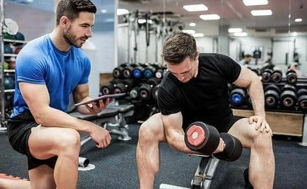
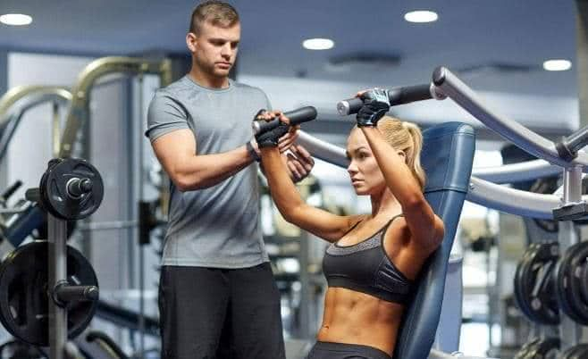

Персональный тренинг
Все, что Вы хотели знать о персональных тренировках в тренажерном зале, но
стеснялись спросить

1. Индивидуальный подход
Большинство женщин и мужчин, приходящих в тренажерный зал, особенно впервые,
находятся не в лучшей физической форме. Сидячий образ жизни, неправильное
питание, отсутствие регулярных тренировок, постоянная нехватка сна приводят к
тому, что мышцы практически атрофируются, а выносливость и сила человека
стремятся к нулевому уровню.
Грамотный тренер в первую очередь оценивает состояние здоровья клиента.
Интересуется его хроническими заболеваниями, ограничениями и противопоказаниями.
И, исходя из полученной информации, выстраивает такую систему тренировок,
которая позволит каждому мягко и постепенно адаптироваться к нагрузкам.
Сами люди могут мечтать, как можно скорее похудеть на десяток килограмм. Или
немедленно приступить к приседу со штангой, дабы обрести модные нынче у девушек
упругие ягодицы. Но опытный тренер начнет именно с тех упражнений, которые будут
соответствовать Вашему уровню физической подготовки, тем самым уберегая от травм
и перегрузок.

2. Правильная техника выполнения упражнений
Грамотный тренер обязательно будет добиваться от Вас правильной техники
выполнения упражнений. Самостоятельные занятия плохи тем, что практически
невозможно с первого раза научиться правильно выполнять упражнения на том или
ином тренажере.
Человеческому телу нужно время, порой достаточно долгое, чтобы:
• «запомнить» технику выполнения упражнений
• «почувствовать» работу мышц
• научиться изолированно включать их в работу
• сформировать правильные нервно-мышечные связи
Новички, пренебрегающие персональными тренировками, чаще всего привыкают делать
упражнения неверным образом. Тем самым либо со временем получают травмы, либо
снижается эффективность занятий. Персональный тренер же «поставит» нужную
технику выполнения упражнений, так, что в будущем можно будет заниматься
самостоятельно без всяких опасений.
3 Короткие сроки получения результата
Занятия с персональным тренером позволяют в очень короткие сроки добиться
заметного
прогресса в обретении желаемой физической формы. Неважно, какая стоит цель -
похудеть,
набрать вес или укрепить здоровье. С персональным тренером ее можно добиться
всего лишь за
1-3 месяца занятий, в то время как самостоятельно этой цели можно не добиться и
за год.
4 Мотивация и дисциплина
Если у Вас проблемы с мотивацией, дисциплиной или силой воли, то персональный
тренер
поможет их обрести. Личный инструктор крайне заинтересован в прогрессе своих
подопечных,
поэтому не позволит «халтурить», отлынивать от занятий или есть тортики по
ночам.
5 Контроль питания
Персональный тренер обязательно составит индивидуальную программу питания,
разъяснит
каким образом ее соблюдать и будет строго следить за соблюдением диеты.
6 Не скучные тренировки
Некоторые люди считают занятия в тренажерном зале скучными и монотонными.
Персональный
тренер способен исправить и это. Вам всегда будет с кем поговорить в перерывах
между
подходами. Можно обсудить интересующие темы или задать беспокоящие Вас вопросы.
7 Оперативная консультация
Персональный тренер постоянно находится на связи со своими подопечными. Так что,
в случае
возникновении любых проблем и вопросов решить их можно незамедлительно.
8 Персональные тренировки для всех
А нужны ли персональные тренировки тем людям, которые давно и эффективно
занимаются в
тренажерном зале? Конечно, нужны! Можно быть достаточно опытным посетителем
«качалки», и
все же занятия с личным тренером способны привести к еще большему прогрессу.
Получить красивый рельеф тела, подрастить мышцы, наконец-то увидеть кубики
пресса – все
цели, которых никак не получается добиться самостоятельно, отлично достигаются
на
персональных тренировках.
Итак, занимаясь с личным тренером, человек гарантированно получит здоровое и
красивое тело,
отличную самооценку и прекрасное настроение.
Так что, смело записывайтесь на персональные тренировки и успешно достигайте
своих целей!